1 Introduction
Rice is the backbone of agriculture in Northeast Thailand, where most of the crop is grown as a single, rainfed wet-season (main-season) crop on the sandy and partly saline soils of the Khorat Plateau. Yields in this environment depend on the timing and amount of monsoon rainfall, on floods along the Mun, Chi and Mekong river systems, on heat and humidity around flowering, and on how farmers allocate land, labour and fertiliser between rice and upland cash crops such as cassava, sugarcane and maize. Timely district-level yield forecasts are therefore valuable for food-security monitoring, for targeting drought and flood relief, for the design and settlement of crop insurance, and for market and price-support policy.
The data available for such forecasts have never been richer. Optical satellite time series describe canopy development (Tucker 1979; Huete et al. 2002), water-sensitive indices track flooding and transplanting in paddies (Gao 1996; Xiao et al. 2005), thermal sensors measure land-surface temperature (Wan 2008), gridded rainfall and land reanalyses provide weather and soil moisture (Funk et al. 2015; Muñoz-Sabater et al. 2021), and cloud platforms make these archives accessible at the scale of administrative units (Gorelick et al. 2017). Machine-learning (ML) models that combine such predictors now routinely report high accuracy (Jeong et al. 2016; Cai et al. 2019; Khaki and Wang 2019; Klompenburg et al. 2020).
Three methodological problems nevertheless limit what can be learned from this literature. The first is evaluation leakage. Yield data form a spatio-temporal panel in which errors are correlated within seasons and among neighbouring units. Randomly partitioned cross-validation lets a model learn from future seasons and from neighbours in the same season, and seemingly innocuous predictors—contemporaneous prices, anomalies computed against full-period means, spatial averages of neighbours’ outcomes—import information that would not be available at forecast time (Kaufman et al. 2012; Roberts et al. 2017; Kapoor and Narayanan 2023). The resulting optimism is well documented for time series and spatial ecology (Tashman 2000; Bergmeir and Benítez 2012; Roberts et al. 2017) but is rarely quantified for multi-source yield models. The second is explanation without ground truth. Feature attributions such as SHAP values (Lundberg and Lee 2017; Lundberg et al. 2020) are increasingly used to rank the drivers of yield, yet with dependent predictors credit can be distributed in counter-intuitive ways (Aas et al. 2021; Hooker et al. 2021), and with real data the true drivers are unknown, so the faithfulness of such explanations cannot be checked. The third is incomplete integration. Economic predictors—own and competing-crop prices that govern land and input allocation (Nerlove 1956)—and explicitly spatial predictors are seldom evaluated alongside weather and satellite data, and point forecasts are rarely accompanied by calibrated uncertainty (Vovk et al. 2005; Lei et al. 2018).
This study addresses these problems with a simulation benchmark. Following the logic of simulation studies for statistical methods (Morris et al. 2019), we construct a process-informed data-generating process (DGP) for main-season rice in 200 districts of Northeast Thailand over 18 seasons. The DGP encodes agronomic mechanisms (water stress at establishment and late in the season, floods, heat, humid-season disease, salinity), economic mechanisms (input intensity, competition from cassava, sugarcane and maize, and a harvest-to-price feedback), persistent management and local pest outbreaks. It emits observations that mimic real sources—monthly weather and soil moisture, cloud-contaminated satellite indices, national and local prices, and imperfect map layers—and it stores every additive yield component, so that model explanations can be compared with the truth. The same code ingests real data with an identical schema, so the benchmark doubles as a reproducible template for empirical work. We stress at the outset that all results reported here concern the synthetic benchmark; they are not empirical statements about Thai rice yields.
We ask four research questions and state hypotheses for each, formulated at the design stage:
- RQ1 (accuracy).
-
How much do multi-source learners improve on persistence, climatology and an econometric panel model under leakage-safe evaluation? H1: multi-source learners are significantly more accurate than all baselines.
- RQ2 (evaluation).
-
How much do random cross-validation and subtle feature leakage overstate skill? H2: both produce materially optimistic error estimates.
- RQ3 (attribution).
-
Which feature groups carry predictive information, and do SHAP attributions recover the true mechanisms? H3: satellite features carry unique information (pest outbreaks invisible to weather data), whereas the moisture, water and satellite groups partly substitute for each other. H4: SHAP recovers strong, well-observed mechanisms but not weak or year-confounded ones such as price effects.
- RQ4 (timeliness and uncertainty).
-
How does skill evolve during the season, and are prediction intervals calibrated? H5: skill increases with the data cut-off month and the value of satellite data grows after panicle initiation. H6: conformal intervals are near-nominal on average but under-cover in shock seasons.
The paper makes five contributions: (i) an open, documented benchmark DGP with ground-truth yield components for multi-source yield forecasting; (ii) a quantification of how much common evaluation shortcuts inflate apparent skill; (iii) a ground-truth test of grouped SHAP attributions in the presence of dependent predictor groups; (iv) evidence on the in-season value of satellite data and on the calibration of distribution-free prediction intervals; and (v) a leakage-tested, fully reproducible code base with a documented pathway to real Thai data. Section 2 reviews related work, Section 3 describes the benchmark, Section 4 the methods and Section 5 the results; Section 6 discusses implications and limitations and Section 7 concludes.
2 Related work
2.0.0.1 Process-based and statistical yield models.
Process-based crop models such as DSSAT and APSIM simulate phenology, water and nutrient balances and yield formation from first principles (Jones et al. 2003; Holzworth et al. 2014); they are mechanistically transparent but demand management and soil inputs that are rarely available at district scale. Statistical models relate historical yields to weather and have revealed strongly non-linear temperature responses (Schlenker and Roberts 2009), quantified the contribution of climate trends, variability and extremes to production (Lobell et al. 2011; Ray et al. 2015; Lesk et al. 2016), and highlighted the joint role of soil moisture and evaporative demand (Rigden et al. 2020). Their strengths and pitfalls are reviewed by Lobell and Burke (2010), and seasonal forecasting applications by Basso and Liu (2019). Our DGP borrows the threshold-type responses of this literature, and our panel fixed-effects baseline follows its econometric tradition (Wooldridge 2010).
2.0.0.2 Remote sensing of crop yield.
Vegetation indices such as NDVI and EVI summarise canopy greenness and photosynthetic capacity (Tucker 1979; Huete et al. 2002); water-sensitive indices detect flooding and transplanting of paddy rice (Gao 1996; Xiao et al. 2005); and land-surface temperature captures canopy stress (Wan 2008). Regressions on seasonal index metrics underlie operational forecasts (Becker-Reshef et al. 2010; Johnson 2014), while scalable approaches combine imagery with crop-model simulations (Lobell et al. 2015; Burke and Lobell 2017). Gridded precipitation (Funk et al. 2015), land reanalysis (Muñoz-Sabater et al. 2021) and cloud computing (Gorelick et al. 2017) make district-level feature extraction routine; monsoon cloud cover, however, leaves gaps that must be handled explicitly.
2.0.0.3 Machine learning for yield and for tabular data.
Random forests (Breiman 2001) and gradient boosting (Friedman 2001; Ke et al. 2017) are the workhorses of ML yield studies (Jeong et al. 2016; Cai et al. 2019; Klompenburg et al. 2020), and deep architectures have been applied to image histograms and weather sequences (You et al. 2017; Khaki and Wang 2019). On medium-sized tabular data tree ensembles remain hard to beat (Grinsztajn et al. 2022; Shwartz-Ziv and Armon 2022), which matters at district scale, where a few thousand unit-seasons are typical.
2.0.0.4 Evaluation and leakage.
Out-of-sample evaluation of forecasts must respect temporal order (Tashman 2000; Hyndman and Athanasopoulos 2021); ordinary cross-validation is valid for time series only under restrictive conditions (Bergmeir and Benítez 2012), and spatial, temporal or hierarchical dependence calls for blocked designs (Roberts et al. 2017). Leakage—the use of information unavailable at prediction time—is a pervasive cause of over-optimism in applied ML (Kaufman et al. 2012; Kapoor and Narayanan 2023). Differences in forecast accuracy should be tested formally, for example with the Diebold–Mariano test (Diebold and Mariano 1995) and its small-sample correction (Harvey et al. 1997), using resampling schemes that respect dependence (Künsch 1989; Efron and Tibshirani 1993).
2.0.0.5 Explainability with dependent predictors.
SHAP values provide additive, axiomatically motivated attributions (Lundberg and Lee 2017) that can be computed exactly for tree ensembles (Lundberg et al. 2020). When predictors are dependent, however, Shapley-based attributions can spread or shift credit among correlated features and probe the model off the data manifold (Aas et al. 2021; Hooker et al. 2021; Molnar 2022). Because real yield datasets lack ground truth, the faithfulness of attributions to the data-generating mechanisms has rarely been assessed for crop models; simulation with known truth is the natural remedy (Morris et al. 2019).
2.0.0.6 Uncertainty quantification.
Conformal prediction provides distribution-free predictive intervals under exchangeability (Vovk et al. 2005; Lei et al. 2018), with quantile-based (Romano et al. 2019) and adaptive variants for distribution shift (Gibbs and Candès 2021). Seasonal yield data are not exchangeable—shock seasons cluster errors—so the calibration of conformal intervals in this setting is an empirical question that we examine directly.
3 Study region and benchmark design
3.1 Study region
Northeast Thailand (Isan) comprises 20 provinces on the Khorat Plateau, bounded by the Mekong River to the north and east, the Phetchabun range to the west and the Dangrek range to the south (Fig. 1a,b). The plateau is drained by the Chi and Mun rivers, which join before flowing into the Mekong. Most rice in the region is grown as a single rainfed wet-season crop on light-textured, often sandy soils, parts of which are affected by salinity, and upland fields are increasingly planted with cassava and sugarcane. The monsoon delivers most rainfall between May and October, with a drier, rain-shadowed south-west and a wetter north-east, so that early-season dry spells, an early end of the rains and floods along the river systems dominate the year-to-year variability of yields.
The benchmark reproduces these features qualitatively (Sections 3.4–3.8) but contains no observed data from the region. To relate the simulation to real geography, each simulated district is assigned to the province of its nearest provincial capital and district values are averaged by province. Fig. 1c–f shows the simulated satellite signal at this level for four seasons. In 2019 and 2023, the two shock seasons of the test period, peak-season greenness was below normal in 15 and 16 of the 20 provinces (regional means and ), whereas in 2021 and 2025 it was above normal in 16 and 16 provinces (regional means and ). The spatial patterns differ between seasons—the 2019 deficit is concentrated in the north-west of the region and the 2023 deficit in the west and south-west—reflecting the spatially correlated rainfall anomalies of the data-generating process; a model that is to be useful must therefore resolve within-region contrasts, not only the regional mean.
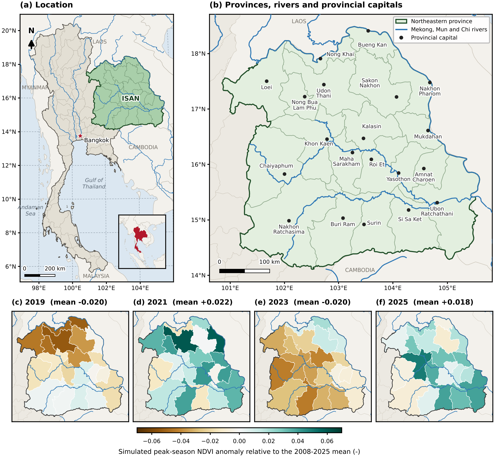
3.2 Forecasting problem
The unit of analysis is a district (amphoe) in season ; the target is the main-season rice yield in kg rai (1 rai ha, hence 1 kg rai kg ha). The season runs from sowing in May to harvest in November and is divided into establishment (May–July), vegetative (August–September) and reproductive (October–November) stages. A forecast for season issued at the end of month may use any information available by then: yields of earlier seasons, weather and satellite observations up to , prices observed before sowing, and static map layers.
3.3 Design of the simulation study
We follow the aims–data-generating mechanisms–estimands–methods–performance structure recommended for simulation studies (Morris et al. 2019). The aims are RQ1–RQ4. The data-generating mechanisms are described below, in Table 1 and in Appendix A. The estimands are out-of-sample forecast errors on the test seasons 2018–2025 and, for RQ3, the true additive yield components. The methods are the learners and protocols of Section 4, and performance is measured by the error, coverage and recovery statistics of Section 4.4. The main world uses seed 42; ten further worlds and four scenario worlds quantify Monte-Carlo and structural variability (Section 4.9).
3.4 Spatial layers
District centroids are placed inside an outline of the region with Mitchell’s best-candidate algorithm, which yields an even, administrative-like spacing; Voronoi cells are used only for display (Fig. 2). Static layers combine smooth deterministic patterns with spatially correlated Gaussian random fields (kernel-smoothed white noise with length scales of 40–150 km): elevation with the Phetchabun, Dangrek and Phu Phan uplands and lower river valleys; slope; soil sand content, soil organic carbon (SOC) and pH; salinity hot spots in the central lowlands; a four-class land-suitability index (S1, S2, S3, N); irrigated and paddy shares; flood frequency, which decays with distance from the Mekong, Mun and Chi; and distances to provincial towns (markets) and sugar mills. The observed sand, SOC, salinity and irrigation layers equal the true values plus measurement error, mimicking coarse soil maps and outdated irrigation inventories.
3.5 Weather, water and soil moisture
A season-level, ENSO-like index (positive: dry and hot) loosely follows the historical phase sequence (Ropelewski and Halpert 1987). Monthly rainfall is log-normal around a district rainfall normal that increases from the rain-shadowed south-west to the wet north-east, with seasonal, monthly and idiosyncratic spatially correlated anomalies; dry phases depress June–July rainfall most. Temperature follows a lapse rate, a warming trend, and rainfall anomalies, and relative humidity rises with rainfall. Soil moisture follows a texture-dependent bucket model, so that identical rainfall leaves sandy soils drier. Reservoir storage at sowing in each of three basins depends on the previous season’s dryness and supplies water to irrigated areas.
3.6 Prices and economic behaviour
National farm-gate prices of rice, cassava, sugarcane, maize and urea follow correlated log-AR(1) processes with occasional shocks such as fertiliser price spikes. Local prices subtract transport costs proportional to the distance to a market or, for cane, to a sugar mill. Two behavioural channels act on yields through lag-1 prices known at sowing: a higher rice-to-urea price ratio raises input intensity, and a higher revenue of competing crops relative to rice diverts labour and inputs from rice, more strongly in non-irrigated districts. A harvest-to-price feedback lowers the rice price in seasons with a large regional harvest, so that same-season prices carry information about the season’s yields—a realistic source of endogeneity that the leakage audit exploits.
3.7 Yield equation
Yield is the clipped sum of additive components, where is a district base level, drought (establishment and late season), flood, heat, humid-season disease, salinity aggravated by drought, price effects, an AR(1) management effect, local pest outbreaks and unobservable noise (Table 1). All stress terms are hinge functions, which creates non-linearity, and several are interactions (irrigation reservoir buffering, salinity drought, competition irrigation). Pest outbreaks occur in 2016, 2022, 2023 and affect districts within roughly 70 km of a random centre; they are visible to the satellite indices but to no weather variable.
3.8 Satellite observation model
Monthly NDVI follows a bell-shaped seasonal curve whose amplitude saturates in the visible part of yield (all components except ) and whose peak is delayed when early-season soil moisture is low; flooding depresses NDVI in September–October. EVI responds less saturatingly, LSWI tracks soil moisture, transplanting water and floods, and LST rises with maximum temperature and dryness and falls with greenness. Monsoon clouds remove or contaminate monthly composites with month-specific probabilities of up to 50% in August; contamination lowers the vegetation indices and LST, as in real composites.
3.9 Ground truth and scenarios
For every district-season the simulator stores the true components of Eq. 1. Four scenario variants of the main world test structural robustness: (a) stronger non-linearity (all threshold terms multiplied by 1.8 plus a compound heat–drought penalty), (b) three-fold map-layer measurement error, (c) 1.7-fold cloud contamination, and (d) no pest outbreaks, that is, no satellite-only signal.
Table 1. Additive yield mechanisms of the benchmark DGP (contributions in kg rai), parameter values used in the base world, and the feature groups that observe each mechanism. : soil-quality index; : irrigated share; : true soil moisture (JJ: Jun–Jul, SO: Sep–Oct); : irrigation supply (irrigated share reservoir storage); : flood frequency; : Aug–Sep rainfall relative to normal; : saline share; , : standardised competing-revenue and rice/urea indices from lag-1 local prices; : regional mean yield anomaly. Scenario variants multiply all threshold terms by 1.8 and add a compound heat–drought penalty (non-linear), triple map-layer measurement error, raise cloud frequency 1.7-fold, or remove pests.
| Mechanism | Contribution to | Parameters | Observed by |
|---|---|---|---|
| Base level | , , , , | Geography, map, history | |
| Technology trend | History | ||
| Establishment drought | , , | Moisture, water, satellite | |
| Late-season drought | , , | Moisture, water, satellite | |
| Flood | , , | Water, map, satellite | |
| Heat at flowering | , C | Climate | |
| Humid-season disease | , % | Moisture | |
| Salinity drought | , | Geography, moisture | |
| Prices & competition | , | Prices, map | |
| Harvest-price feedback | (price endogeneity) | ||
| Management | , | History, satellite | |
| Pest outbreaks | in 3 seasons | , km | Satellite only |
| Noise | None (irreducible) |
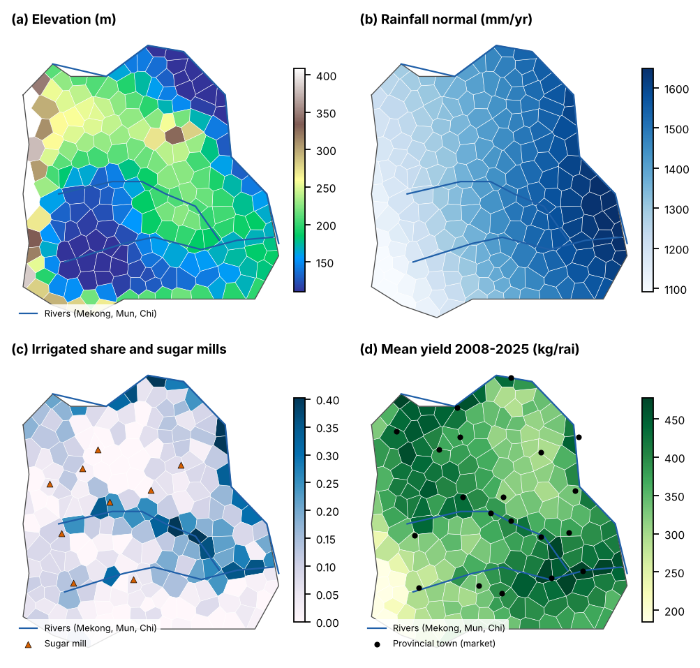
4 Methods
4.1 Features
From the raw tables we construct 81 features in eight groups (Table 2). Weather and satellite variables are aggregated by growth stage (sums for rain; means, minima and maxima for moisture, temperature and indices) and complemented by season metrics: total rain and its anomaly relative to the district’s previous seasons, the number of dry and hot months, growing degree-days (base 10 C), vapour-pressure deficit, and the NDVI peak, area, timing and green-up rate after linear gap-filling of cloud-missing months, together with a clear-sky fraction. Price features convert lag-1 national prices into local farm-gate prices; price ratios and a log competing-revenue index summarise relative profitability. Map features include distances, irrigated and paddy shares, flood frequency and -nearest-neighbour () spatial lags of the neighbours’ previous-season yields and current-season NDVI anomalies.
Four rules make the features leakage-safe: (i) yield history uses previous seasons only; (ii) prices are lagged one season; (iii) weather and satellite data are truncated at the forecast cut-off month; and (iv) anomalies are computed against each district’s previous seasons. The rules are enforced by automated tests that perturb all data of later seasons and verify that the features of earlier seasons are unchanged, and—as a check of the test itself—that each deliberately leaky variant of Section 4.5 fails it.
Table 2. Feature groups, number of features, content, and the real-data sources that can replace the synthetic inputs without code changes (OAE: Office of Agricultural Economics; DOAE: Department of Agricultural Extension; TMD: Thai Meteorological Department; RID: Royal Irrigation Department; OCSB: Office of the Cane and Sugar Board; LDD: Land Development Department; GISTDA: Geo-Informatics and Space Technology Development Agency).
| Group | Features | Real-data sources | |
|---|---|---|---|
| Previous yields | 5 | lags , ; previous-3-season mean and s.d.; 5-season trend | OAE / DOAE statistics |
| Humidity & soil moisture | 12 | RH, VPD, soil-moisture mean and minimum per growth stage | ERA5-Land; SMAP |
| Water (rain, reservoir, irrigation) | 8 | rain per stage and season; anomaly vs. past; dry months; reservoir storage; irrigation supply | CHIRPS; TMD; RID reservoirs |
| Climate (temperature, GDD) | 9 | , per stage; GDD; hot months; rainfall normal | ERA5-Land; TMD normals |
| Satellite (NDVI, EVI, LSWI, LST) | 19 | NDVI/EVI maxima, LSWI/LST means per stage; NDVI peak, area, timing, green-up; clear-sky fraction; anomalies | MODIS MOD13Q1, MOD09A1, MOD11A2; Sentinel-1/2 |
| Prices (own & competing crops) | 11 | lag-1 local prices of rice, cassava, sugarcane, maize; ratios; competing-revenue index; rice/urea ratio | OAE farm-gate prices; OCSB cane price |
| Geography (terrain, soil) | 9 | elevation, slope, sand, SOC, pH, saline share, suitability class, coordinates | SRTM; LDD soil maps; SoilGrids |
| Map layers & spatial lags | 8 | distances to river, mill and market; irrigated and paddy share; flood frequency; -NN spatial lags | RID; LDD land use; GISTDA floods; OSM |
| Total | 81 |
4.2 Learners
We compare eight learners of increasing flexibility. Persistence forecasts last season’s yield and climatology the mean of the previous three seasons, . The panel fixed-effects (FE) model is the econometric baseline: a within estimator with district effects, a linear trend and all time-varying covariates, with lagged yields excluded to avoid dynamic-panel bias and a small ridge penalty for numerical stability (Wooldridge 2010). Ridge regression (Hoerl and Kennard 1970) uses standardised, median-imputed features with the penalty chosen by efficient leave-one-out cross-validation within the training data. The random forest (Breiman 2001) has 200 trees. The multilayer perceptron (MLP; hidden layers of 64 and 32 units, early stopping) represents neural approaches. LightGBM (Ke et al. 2017) is a histogram-based gradient-boosting machine that handles missing values natively. The ensemble averages LightGBM and Ridge with equal weights, combining the threshold-and-interaction capacity of trees with the smooth extrapolation of a linear model; fixed weights avoid an additional layer of fitting (cf. Wolpert 1992).
Two target formulations are considered: the yield level , and the anomaly , which removes district effects and slow trends that trees cannot extrapolate; anomaly forecasts are added back to .
4.3 Validation protocol
All evaluation uses a rolling origin (Tashman 2000): the forecast for season comes from a model fitted on seasons only. Seasons 2008–2010 serve only to initialise lagged features. LightGBM hyper-parameters and the target formulation are tuned jointly by random search (15 configurations 2 targets) on the validation seasons 2015–2017, each forecast with rolling origin, and the main model is then selected among LightGBM, Ridge and the ensemble on the same validation seasons. The test seasons 2018–2025 (8 seasons 200 districts forecasts) were used only after all choices had been frozen.
4.4 Performance measures and inference
We report RMSE, MAE, MAPE and the coefficient of determination , together with two skill measures that are not inflated by the large between-district variance: is the share of the deviation from the recent mean that is predicted, and Skill is the reduction of the climatology’s mean squared error. Because errors are strongly correlated within seasons, uncertainty is quantified with a season-block bootstrap that resamples whole test seasons (Künsch 1989; Efron and Tibshirani 1993) (). Accuracy differences relative to the main model are tested with the Diebold–Mariano test (Diebold and Mariano 1995) applied to the season-level differentials of mean squared errors, with the correction of Harvey et al. (1997) for one-step-ahead forecasts, where is the sample variance of ; -values are adjusted with the Holm procedure (Holm 1979).
4.5 Leakage audit (E2)
LightGBM, Ridge and the ensemble are re-estimated under four flawed protocols and scored on the same 1,600 test forecasts: (i) random 5-fold cross-validation over all district-seasons, which trains on future seasons and same-season neighbours; (ii) same-season instead of lag-1 prices; (iii) an additional spatial lag of neighbours’ current-season yields; and (iv) weather and NDVI anomalies computed against the full-period district mean. Optimism is expressed as the relative reduction of RMSE compared with the leakage-safe protocol.
4.6 Attribution and ground-truth recovery (E3–E4)
Predictive value is measured by drop-one-group ablation: each group is removed, the model is re-trained in every fold and the RMSE change is computed with season-bootstrap intervals. When the history group is removed, the level target is used, because the anomaly target presupposes past yields. Attributions are computed for every test forecast: TreeSHAP for LightGBM (Lundberg et al. 2020) and exact linear SHAP, , for Ridge; because Shapley values are additive in the model output, the ensemble’s attribution is the average of the two. Group attributions are sums, . Ground-truth recovery is assessed by the Pearson correlation between each true component of Eq. 1 and for every group, and by comparing binned SHAP dependence curves with the binned true component along the main observed driver.
4.7 In-season forecasting (E5)
Features are rebuilt with data cut-offs at the end of July, August, September, October and November, and the full protocol is repeated with and without the satellite group. The difference measures the marginal value of satellite data at each forecast date.
4.8 Prediction intervals (E6)
Prediction intervals use rolling split-conformal calibration: for test season , the interval is , where are empirical quantiles of the main model’s out-of-sample errors in all earlier seasons from 2014 onwards. This respects the forecasting information set. We evaluate 80% and 90% intervals overall, by season, and separately in shock seasons, defined as seasons whose regional mean anomaly lies more than one standard deviation below the mean of all seasons.
4.9 Robustness (E7)
The tuned configuration is applied without re-tuning to ten independently simulated replicate worlds (seeds 1000–1009) and to the four scenario worlds. For each world we record the RMSE of climatology, Ridge, LightGBM and the ensemble, of the ensemble without satellite features, and of the ensemble scored by random cross-validation.
4.10 Implementation and reproducibility
The pipeline is written in Python 3.12 with NumPy, pandas, scikit-learn (Pedregosa et al. 2011) and LightGBM 4.7, and the complete set of experiments runs on a single CPU core in about 7 minutes. Every number in this paper is written to a macro file by code from saved results. Raw inputs follow a documented schema; a Google Earth Engine script extracts their real counterparts (MODIS vegetation indices, LSWI and LST, CHIRPS rainfall, ERA5-Land weather and soil moisture, SRTM terrain and a cropland mask) for any set of district polygons (Table 2). Maps are drawn with GeoPandas from Natural Earth boundaries (Natural Earth 2026) by scripts/thailand_map.py.
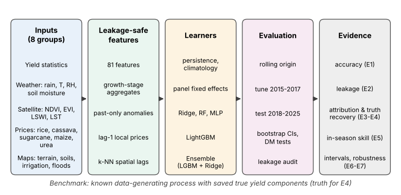
5 Results
5.1 Accuracy of multi-source forecasts (RQ1)
Table 3 and Fig. 4 summarise the 1,600 test forecasts. Climatology reached an RMSE of 47.1 kg rai and persistence 59.2 kg rai. Every multi-source learner was more accurate. LightGBM had the lowest test error (27.4 kg rai, i.e. 0.171 t ha; MAPE 6.4%), 42% below climatology, followed by the random forest (28.2) and the validation-selected ensemble (29.9 kg rai; 95% CI 24.7–37.4), which reduced the climatology error by 36% (difference 17.1 kg rai, CI 3.6–27.5). The multilayer perceptron (32.2), the panel fixed-effects model (35.2) and Ridge regression (37.9) were less accurate. The skill measures confirm that the gains concern the season-to-season deviations that matter for forecasting: LightGBM explained a share of 0.66 of the variance of the anomaly relative to the previous-three-season mean (Skill 0.66), the ensemble 0.59 (Skill 0.60).
Formal tests were less conclusive than these magnitudes suggest. With only eight test seasons and Holm adjustment over eight comparisons, no Diebold–Mariano test against the ensemble was significant at the 5% level (smallest adjusted , for persistence; for climatology). The season-bootstrap interval of the ensemble’s advantage over climatology nevertheless excludes zero, and the replicate worlds (Section 5.7) show that the advantage is systematic.
Model selection on the validation seasons favoured the ensemble (validation RMSE 26.2, against 27.4 for Ridge and 28.1 for LightGBM), but on the test seasons LightGBM was more accurate (RMSE difference kg rai, 95% CI to ). The error by season (Fig. 5) shows why: the linear learners failed in single seasons—Ridge in 2018 (RMSE 81.7) and the panel model in 2020 (65.4)—and the ensemble inherited half of Ridge’s failure (50.9 in 2018), whereas LightGBM never exceeded 31.9 kg rai in any season. In the remaining seasons the ensemble was usually the most accurate learner, including the shock seasons 2019, 2023, in which climatology and persistence were worst. The level target was preferred to the anomaly target during tuning, and the anomaly-target LightGBM was also less accurate on the test seasons (31.2).
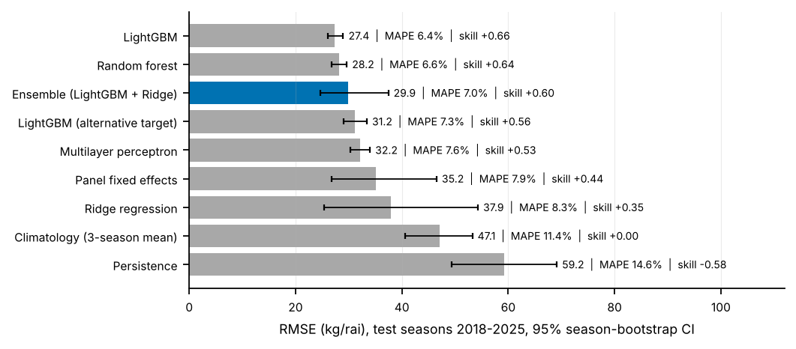
Table 3. Out-of-sample accuracy on the test seasons 2018–2025 (rolling origin; 1,600 district-season forecasts). RMSE and MAE in kg rai (multiply by 0.00625 for t ha); brackets: 95% season-block bootstrap CI. : skill on deviations from the previous-3-season mean; Skill: . : Holm-adjusted Diebold–Mariano (HLN) test against the main model ().
| Model | RMSE [95% CI] | MAE | MAPE (%) | Skill | |||
|---|---|---|---|---|---|---|---|
| LightGBM | 27.4 [26.1, 29.0] | 21.7 | 6.4 | 0.89 | 0.66 | +0.66 | 1.000 |
| Random forest | 28.2 [26.8, 29.6] | 22.2 | 6.6 | 0.88 | 0.64 | +0.64 | 1.000 |
| Ensemble (LightGBM + Ridge) | 29.9 [24.7, 37.4] | 23.4 | 7.0 | 0.87 | 0.59 | +0.60 | – |
| LightGBM (alternative target) | 31.2 [29.0, 33.4] | 24.6 | 7.3 | 0.85 | 0.56 | +0.56 | 1.000 |
| Multilayer perceptron | 32.2 [30.3, 34.0] | 25.6 | 7.6 | 0.84 | 0.53 | +0.53 | 1.000 |
| Panel fixed effects | 35.2 [26.8, 46.5] | 27.5 | 7.9 | 0.81 | 0.44 | +0.44 | 1.000 |
| Ridge regression | 37.9 [25.4, 54.3] | 27.9 | 8.3 | 0.78 | 0.35 | +0.35 | 1.000 |
| Climatology (3-season mean) | 47.1 [40.6, 53.2] | 37.8 | 11.4 | 0.67 | -0.00 | +0.00 | 0.251 |
| Persistence | 59.2 [49.3, 69.1] | 48.1 | 14.6 | 0.47 | -0.59 | -0.58 | 0.080 |
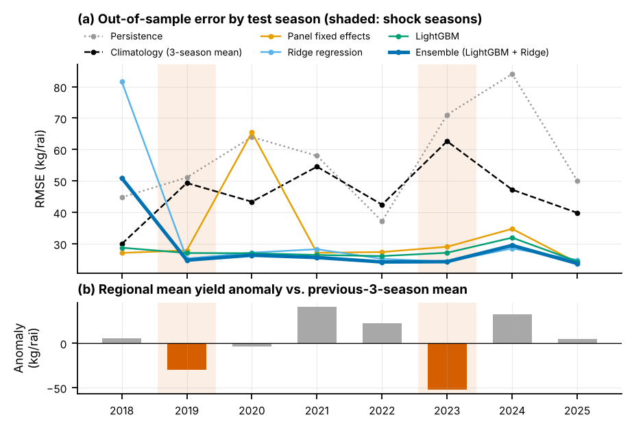
5.2 Leakage inflates apparent skill and hides failures (RQ2)
Table 4 and Fig. 6 compare the leakage-safe estimates with four flawed protocols. For LightGBM—the learner whose honest performance was stable—random 5-fold cross-validation understated the RMSE by 10%, and adding the neighbours’ current-season yields by 5%. Anomalies computed against the full-period mean had a negligible effect (1%), and same-season prices did not help (%) although they carry information about the current harvest through the price feedback; a plausible explanation is that, with fewer than fifteen training seasons, a predictor that varies mainly between seasons is hard to exploit. Apparent gains were much larger for Ridge and the ensemble (random cross-validation: 35% and 21%), but for a different reason: under the flawed protocols the linear learner no longer had to extrapolate to an unseen season, and its catastrophic failure disappeared. Random cross-validation therefore did not merely inflate skill; it concealed the failure mode altogether. The replicate worlds confirm the pattern: the randomly cross-validated ensemble reported 23.5 0.4 kg rai in every world (range 23.1–24.4), whereas its honest RMSE ranged from 24.4 to 55.2.
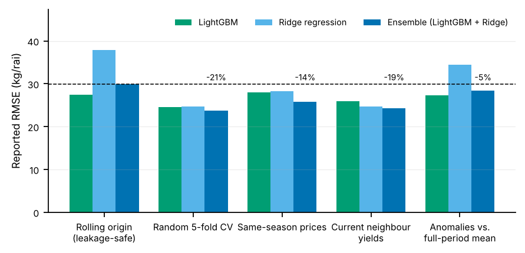
Table 4. Leakage audit: RMSE (kg rai) reported on the same 1,600 test forecasts under the leakage-safe protocol and under four flawed protocols; parentheses: change relative to the leakage-safe RMSE (negative = optimistic bias).
| Protocol | LightGBM | Ridge | Ensemble |
|---|---|---|---|
| Rolling origin (leakage-safe) | 27.4 | 37.9 | 29.9 |
| Random 5-fold CV | 24.6 (-10%) | 24.7 (-35%) | 23.8 (-21%) |
| Same-season prices | 28.0 (+2%) | 28.3 (-25%) | 25.9 (-14%) |
| Current neighbour yields | 25.9 (-5%) | 24.6 (-35%) | 24.3 (-19%) |
| Anomalies vs. full-period mean | 27.2 (-1%) | 34.4 (-9%) | 28.5 (-5%) |
5.3 Which predictors matter (RQ3)
Drop-one-group ablation (Fig. 7a; Table B.3) identified the satellite group as the only group whose removal materially degraded LightGBM (+25.0%); removing any other group changed its RMSE by between % and %. The weather, soil-moisture, price, terrain and history groups are therefore individually substitutable: much of their information is also contained in other groups—soil moisture in rainfall and LSWI, the district level in terrain, soils and neighbours’ yields. For the ensemble, removing the satellite group raised the RMSE by +90.3% and removing geography by +15.1%, but removing the moisture, climate or price features lowered it (%, % and %), because every reduction of the season-level feature set reduced Ridge’s scope for extrapolation. Ablation results of a fragile learner thus mix information content with model stability.
Grouped SHAP shares differed sharply between learners (Fig. 7b). LightGBM attributed 36.4% of the mean absolute SHAP value to the satellite group, 20.1% to history and 11.0% to moisture, but only 6.9% to prices. The ensemble attributed the largest share to prices (28.7%), followed by the satellite (21.6%) and moisture (20.6%) groups. Ablation and SHAP answer different questions—the marginal predictive value of a group versus its use by a particular model—and the ensemble’s large price share reflects Ridge’s use of season-level price variables rather than their predictive value, since removing them improved the ensemble. The satellite group’s value is not restricted to pests: in the world without pest outbreaks the ensemble’s RMSE still rose from 25.0 to 43.6 kg rai without satellite features, because canopy indices integrate the visible state of the crop, including drought, management and soil effects.
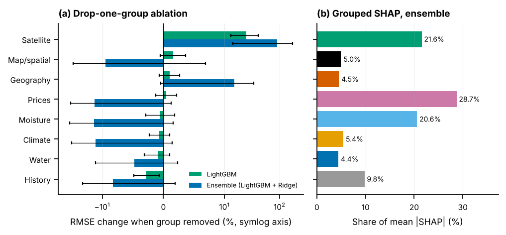
5.4 Do explanations recover the true mechanisms? (RQ3)
Because the simulator stores the true yield components, attributions can be checked directly (Fig. 8, Table 5). Two mechanisms were recovered well: the district base level, through the history, geography and map groups ( for the ensemble and 0.92 for LightGBM), and drought, through the moisture, water and satellite groups ( and 0.88); the binned SHAP curve of the moisture and water groups reproduced the threshold response of the true drought component (Fig. 9a). Recovery failed in three characteristic ways. First, substitution among correlated mechanisms: heat stress around flowering, which co-occurs with dry conditions, was credited mainly to the moisture and water groups, while the climate group’s SHAP was negatively correlated with the true heat penalty (; Fig. 9d). Second, absorption of season-level effects: the technology trend, a pure season effect, was not recovered by the history group () but correlated strongly and negatively with the price group’s SHAP (Fig. 8); a predictor that varies mainly between seasons can stand in for any season effect. Third, weak or diluted signals: floods (), humid-season disease () and management () were essentially not recovered, and pest outbreaks only weakly (), partly because their satellite signal is shared with the neighbours’ NDVI anomalies in the map group. Learner stability mattered most for prices: LightGBM’s price and map attributions tracked the true price effect (), whereas the ensemble’s did not (), and its price SHAP even ran against the true response (Fig. 9c). Unobservable noise was, correctly, attributed to no group.
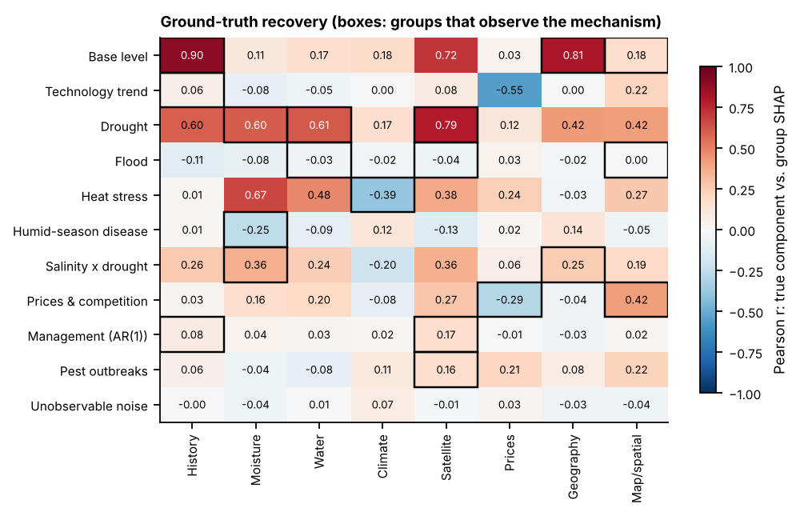
Table 5. Ground-truth recovery on the test forecasts. s.d.: standard deviation of the true component (kg rai); : Pearson correlation between the true component and the summed SHAP values of the groups that observe it, for the main model and (post hoc) for LightGBM alone; last column (main model): the single group whose SHAP correlates most strongly (absolute value) with the component.
| True component | s.d. | Observed by | main | LightGBM | Best single group () |
|---|---|---|---|---|---|
| Base level | 44.8 | Geography, Map/spatial, History | 0.90 | 0.92 | History (0.90) |
| Technology trend | 5.0 | History | 0.06 | 0.06 | Prices (-0.55) |
| Drought | 39.0 | Moisture, Water, Satellite | 0.84 | 0.88 | Satellite (0.79) |
| Flood | 5.4 | Water, Map/spatial, Satellite | -0.04 | -0.05 | History (-0.11) |
| Heat stress | 9.5 | Climate | -0.39 | -0.34 | Moisture (0.67) |
| Humid-season disease | 5.1 | Moisture | -0.25 | 0.00 | Moisture (-0.25) |
| Salinity drought | 0.8 | Geography, Moisture | 0.41 | 0.33 | Satellite (0.36) |
| Prices & competition | 14.4 | Prices, Map/spatial | -0.02 | 0.52 | Map/spatial (0.42) |
| Management (AR(1)) | 17.4 | History, Satellite | 0.14 | 0.14 | Satellite (0.17) |
| Pest outbreaks | 10.3 | Satellite | 0.16 | 0.16 | Map/spatial (0.22) |
| Unobservable noise | 15.9 | – | – | – | Climate (0.07) |
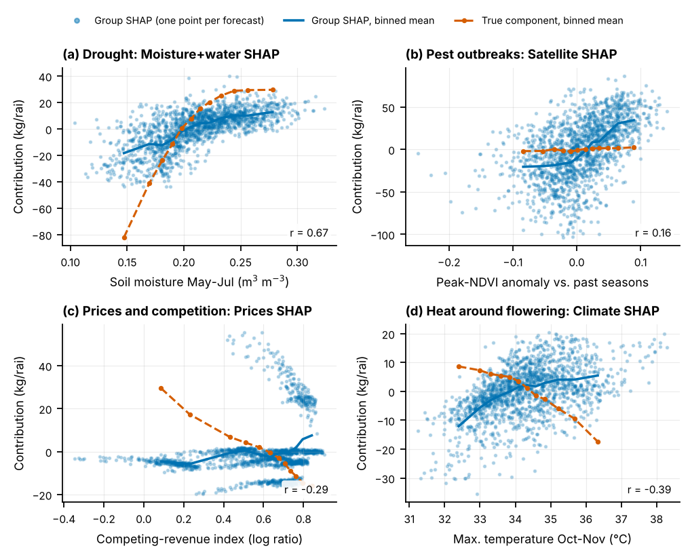
5.5 In-season forecasting (RQ4)
LightGBM’s RMSE fell from 35.9 kg rai with data to the end of July to 35.3 (August), 34.0 (September), 28.5 (October) and 27.4 (November), and it was below climatology (47.1) at every forecast date (Fig. 10a). The value of the satellite group was negligible until September (0.1, 0.4 and 0.9 kg rai) and became substantial once the canopy approached its peak (5.8 in October and 6.8 in November; Fig. 10b). Ridge, in contrast, was unusable early in the season (141.0 kg rai in July), and the ensemble inherited this failure (77.3).
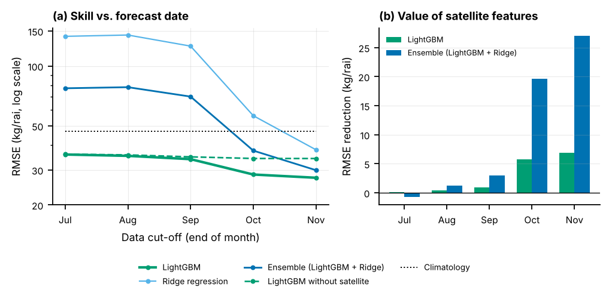
5.6 Calibration of prediction intervals (RQ4)
Rolling split-conformal intervals of the main model were close to nominal: 80% intervals covered 78.3% and 90% intervals 86.6% of the test yields, with mean widths of 74 and 96 kg rai (Fig. 11). Contrary to H6, coverage was higher in the shock seasons 2019, 2023 (85.2% and 93.2%) than in the other seasons (76.0% and 84.4%): the drought shocks were well predicted because their causes are observed. Under-coverage was instead concentrated in the season of the model failure (40% of 80% intervals in 2018). Calibration on past errors thus protects against average miscalibration but not against a new failure mode of the point forecaster.
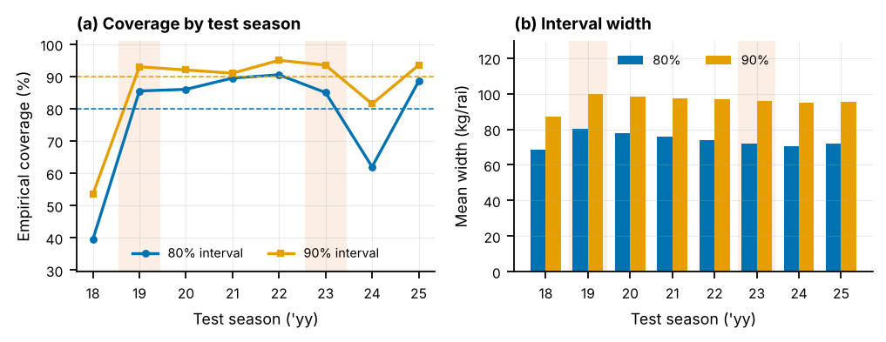
5.7 Robustness across worlds and scenarios
Across ten independently simulated worlds (Table 6), LightGBM was remarkably stable (RMSE 26.5 0.5, range 25.6–27.1), while climatology reached 49.4 2.9. The ensemble had the lowest median RMSE (25.7) and beat LightGBM in 6 of 10 worlds, but its mean (31.8 11.4) was inflated by 2 failures (RMSE more than 1.5 times that of LightGBM), and Ridge failed in 3 worlds (median 28.9, maximum 100.7). Without satellite features the ensemble’s median RMSE rose to 33.6. In the scenario worlds LightGBM stayed between 26.3 and 28.6 kg rai, even under strong non-linearity (28.5, against 87.2 for climatology), whereas Ridge degraded with non-linearity (157.5), cloud contamination (54.7) and map-layer error (39.3). In the world without pest outbreaks the three learners performed similarly (ensemble 25.0, Ridge 25.8, LightGBM 26.3).
Table 6. Robustness: test RMSE (kg rai) in the main world, across ten independently simulated replicate worlds, and in four DGP scenarios (seed 42), with the configuration tuned once in the main world. “No sat.”: ensemble without satellite features; “Random CV”: the same ensemble scored with naive random 5-fold cross-validation.
| World | Climatology | Ridge | LightGBM | Ensemble | No sat. | Random CV |
|---|---|---|---|---|---|---|
| Main world (seed 42) | 47.1 | 37.9 | 27.4 | 29.9 | 56.9 | 23.8 |
| Replicates, mean s.d. () | 49.4 2.9 | 44.2 28.6 | 26.5 0.5 | 31.8 11.4 | 38.5 12.6 | 23.5 0.4 |
| Stronger non-linearity | 87.2 | 157.5 | 28.5 | 83.9 | 166.8 | 26.2 |
| 3 map-layer error | 47.1 | 39.3 | 27.6 | 30.5 | 55.4 | 23.8 |
| 1.7 cloud contamination | 47.1 | 54.7 | 28.6 | 36.8 | 65.1 | 24.6 |
| No satellite-only pests | 46.8 | 25.8 | 26.3 | 25.0 | 43.6 | 23.6 |
5.8 Post-hoc diagnosis of the linear failures
The failures of the linear learner were not anticipated, so we diagnosed them after the confirmatory analysis; the results in this subsection are exploratory. RidgeCV selects its penalty by efficient leave-one-out cross-validation over rows, which treats district-seasons as exchangeable. Because errors are strongly correlated within seasons, leaving out one district-season leaves its season effect visible through the other districts, and the selected penalty is small (in 2018: ; median over test folds 0.79). Selecting the penalty by leave-one-season-out (LOSO) cross-validation gave much stronger regularisation (; median 62.1) and removed the failure (Table 7): the 2018 RMSE fell from 81.7 to 27.1 kg rai, and the test RMSE of Ridge from 37.9 to 26.4. With the season-blocked penalty the ensemble would have reached 25.8 kg rai, below LightGBM (27.4). The same mechanism explained the failures in the two worst replicate worlds and in the non-linear scenario. Tuning that ignores the season structure is thus itself a form of leakage—one that random outer cross-validation cannot detect.
Table 7. Post-hoc diagnosis (exploratory): test RMSE (kg rai) of Ridge and of the LightGBM–Ridge ensemble when the Ridge penalty is selected by row-wise leave-one-out (as in the confirmatory analysis) or by leave-one-season-out (LOSO) cross-validation.
| World | Ridge, row LOO | Ridge, LOSO | Ensemble, row LOO | Ensemble, LOSO | LightGBM |
|---|---|---|---|---|---|
| Main world (seed 42) | 37.9 | 26.4 | 29.9 | 25.8 | 27.4 |
| Replicate world 1002 | 91.7 | 27.7 | 50.5 | 25.7 | 26.0 |
| Replicate world 1008 | 100.7 | 28.5 | 55.5 | 25.4 | 25.9 |
| Non-linear scenario | 157.5 | 32.0 | 83.9 | 27.8 | 28.5 |
Table 8. Summary of the evidence for the hypotheses.
| Hypothesis | Evidence | Verdict |
|---|---|---|
| H1: multi-source learners beat the baselines | RMSE 27.4–29.9 vs. 47.1 (climatology); bootstrap CI of the gain excludes zero; replicated in all worlds; DM tests over 8 seasons not significant | Supported in effect size; tests underpowered |
| H2: flawed protocols are optimistic | random CV 10% (LightGBM) and concealed failures; current neighbour yields 5%; same-season prices and full-period anomalies negligible | Partly supported |
| H3: satellite unique, other groups substitute | satellite removal +25.0%; other groups between % and %; unique value not limited to pests | Supported |
| H4: SHAP recovers strong, not weak or confounded mechanisms | base and drought ; heat misattributed; trend absorbed by prices; price effect recovered only by the stable learner | Supported |
| H5: skill rises in season; satellite value after panicle initiation | LightGBM 35.9 27.4; satellite gain 0.9 until September, 6.8 in November | Supported |
| H6: intervals under-cover in shock seasons | 78.3% overall; 85.2% in shock seasons; under-coverage in the failure season | Not supported |
6 Discussion
6.1 What the benchmark teaches about multi-source yield forecasting
Three lessons stand out. The first is that leakage-safe evaluation must reach every loop. The most consequential failure in this study did not arise from the outer protocol, which was leakage-safe, but from an inner routine—the efficient leave-one-out selection of the Ridge penalty—that silently treated district-seasons as exchangeable. Within-season error correlation let season-level predictors such as prices and reservoir storage fit season effects, the penalty was set too small, and the model extrapolated badly when a new season brought new values of these predictors. Random outer cross-validation did not reveal the problem; it reported excellent and stable performance precisely because it never asked the model to forecast an unseen season. The practical rule is simple: every resampling step, inner and outer, should be blocked by season (and by space when forecasting unseen districts) (Roberts et al. 2017; Bergmeir and Benítez 2012).
The second lesson is that stability is a first-class model property. Tree ensembles extrapolate conservatively, holding predictions constant beyond the training range, whereas linear models extrapolate along every predictor. With fewer than fifteen training seasons and several predictors that vary mainly between seasons, this asymmetry dominated: the tuned LightGBM varied by only 0.5 kg rai across ten worlds, while Ridge failed in 3 of them. Ensembles inherit the failures of their members unless each member is individually robust; once Ridge was tuned by season, the ensemble became the most accurate learner (an exploratory result). The neural baseline did not beat the tree models, in line with benchmarks on tabular data (Grinsztajn et al. 2022; Shwartz-Ziv and Armon 2022).
The third lesson is that explanations need ground truth. Grouped SHAP values reflected strong, well-observed mechanisms faithfully but misattributed correlated mechanisms (heat to moisture) and season-level effects (trend to prices), consistent with known difficulties of attributions under dependence (Aas et al. 2021; Hooker et al. 2021). Explanations also inherit model fragility: the ensemble attributed the largest share of its forecasts to prices, although removing prices improved it and its price attributions ran against the true response. In an empirical study such attributions could easily be read as evidence of economic effects. Grouped attributions of stable models, cross-checked against ablation and, where possible, against simulations with known truth, are safer; causal questions about prices require identification strategies from econometrics rather than predictive attributions (Wooldridge 2010).
6.2 Implications for operational forecasting
If the benchmark’s structure is representative of the region, a district-level system built from MODIS-class composites, ERA5-Land and CHIRPS weather, reservoir data and official statistics could issue informative forecasts from July and sharpen them substantially in October, when satellite information starts to add value, with 80% intervals about 74 kg rai wide. Such a system would serve the agencies that compile yield statistics, monitor floods from space, manage reservoirs and administer crop insurance. The leakage audit implies that accuracy figures obtained with random cross-validation should not be used to justify such systems, and the failure analysis implies that model stability across seasons deserves as much attention as average accuracy.
6.3 Limitations
All conclusions are conditional on the DGP. Although its mechanisms are drawn from the agronomic and remote-sensing literature, the DGP is additive with hinge-type stresses, its parameters were set to plausible values rather than estimated from Thai data, and its satellite indices are generated from the visible part of yield; real indices also respond to weeds, mixed pixels, varietal and phenological differences, so the benchmark may overstate the value of satellite data. Only eight test seasons were available, which limits the power of season-level tests; replicate worlds address Monte-Carlo variability but not structural misspecification. The configuration was tuned once in the main world and reused elsewhere. SHAP values were computed in their interventional form; conditional variants may behave differently under dependence. The analysis is at district level and does not use field-level or radar data, and spatial cross-validation for districts without yield history was not evaluated. Finally, an exploratory version of this pipeline was run before the final design: although tuning and model selection used validation seasons only, the analyst was not blind to earlier test-period results, and the diagnosis of the linear failures is post hoc. Moreover, the post-hoc check was applied to worlds selected because they had failed; a prospective test of season-blocked tuning on fresh worlds is required before the remedy can be recommended on empirical grounds. Recovery was measured by correlation, which ignores the scale of attributions, and the neural baseline was not tuned.
6.4 Pathway to real data
The code ingests real inputs with the same schema (Table 2): yield statistics, CHIRPS and ERA5-Land weather, MODIS composites extracted with the provided Earth Engine script, farm-gate prices, reservoir storage and national soil, land-use and flood maps. Natural extensions are Sentinel-1 radar to observe the crop through monsoon clouds, Sentinel-2 for field-level models, spatially blocked validation for districts without history, conformalised quantile regression or adaptive conformal inference for heteroscedastic and shifting errors (Romano et al. 2019; Gibbs and Candès 2021), and season-blocked inner tuning for every learner.
7 Conclusion
In a benchmark with known truth, multi-source machine learning reduced district-level rice yield forecast errors by 36–42% relative to climatology, with satellite data as the indispensable predictor group and with most of their value arriving from October. The same benchmark exposed three pitfalls that real-data studies cannot see: random cross-validation overstated skill and hid failures; leakage in an inner tuning loop caused catastrophic failures of a linear learner; and SHAP explanations were faithful only for strong, well-observed mechanisms and stable learners. We therefore recommend (i) blocking every resampling step by season, (ii) reporting skill relative to climatology and on anomalies, (iii) preferring learners that are stable under season-level covariate shift, or tuning linear components by season—a remedy our exploratory analysis supports but that still needs prospective confirmation, (iv) treating attributions as descriptions of a model and validating them by simulation, and (v) reporting calibrated intervals together with their coverage by season. The benchmark and code are released so that these checks can precede the use of real data.
Data and code availability
All code, the simulated data, the saved results and the scripts that regenerate every number, table and figure of this paper are provided in the accompanying repository, https://github.com/thanatchon36/isan-rice-yield-benchmark, archived on Zenodo (doi:10.5281/zenodo.24036674); make all reproduces the analysis on a single CPU core. The simulated data and saved results are also published as a dataset, https://huggingface.co/datasets/thanatchon36/isan-rice-yield-benchmark.
AI-assistance statement
The study design, code, experiments and this manuscript were drafted with the assistance of a large language model (Claude, Anthropic) under the direction of the author, who reviewed the code and results and takes full responsibility for the content. Because the drafting model had no access to bibliographic databases, all references were compiled from memory and must be verified against the original sources before submission.
References
A Benchmark data-generating process
Random fields are unit-variance, kernel-smoothed white noise, with and , where is the distance between district centroids in km; denotes independent standard normal draws.
A.0.0.1 Rainfall.
with , where is the rainfall normal, for May–November, in June–July and 1 otherwise, and and are fields with and 80 km.
A.0.0.2 Temperature and humidity.
With and ( a 150-km field): ; ; and , where is elevation and , are regional monthly climatologies.
A.0.0.3 Soil moisture and reservoirs.
; the observed series adds error. Storage at sowing is % with , 0 and 6 for the Mekong, Mun and Chi basins, and the irrigation supply is .
A.0.0.4 Prices.
plus occasional known shocks, with THB kg for rice, cassava, sugarcane, maize and urea, standard deviations , and correlations of 0.35 among crops and 0.2 with urea. Local prices are with THB kg km and the distance to a market or, for cane, to a sugar mill. The competing-revenue index is with and typical yields kg rai for rice, cassava, sugarcane and maize; the input index is . Both indices are standardised before entering Table 1. After each season the rice price is multiplied by , where is the regional mean yield deviation from the base level and trend.
A.0.0.5 Satellite indices.
With visible yield (all components except noise), , and ; flooding reduces September–October values by up to 25%, and observed NDVI is . EVI equals times the same seasonal shape plus , with ; LSWI is plus transplanting and flood terms and ; LST is . With monthly cloud probabilities , a composite is lost with probability and contaminated with probability (NDVI reduced by , EVI by , LST by C, LSWI increased by ).
B Additional results
This appendix documents the tuning of LightGBM and gives the detailed numbers behind Fig. 5, Fig. 7 and Table 6. Table B.1 lists the random-search grid, the configuration selected on the validation seasons and the validation RMSE of the three candidate main models. Table B.2 gives the test RMSE of every learner in every season: the failures of the linear learners (Ridge in 2018 and the panel fixed-effects model in 2020) stand out against otherwise competitive errors, and outside these seasons the ensemble is usually the most accurate learner. Table B.3 reports the drop-one-group ablation for all three learners: for LightGBM only the satellite group matters, whereas for Ridge and the ensemble the removal of most groups lowers the error—a symptom of the extrapolation failures diagnosed in Section 5.8. Table B.4 lists every replicate and scenario world; the failures of Ridge, and of the ensemble that contains it, are confined to a few worlds, whereas LightGBM’s error varies little.
Table B.1. LightGBM random search (15 configurations 2 target formulations, scored by rolling origin on 2015–2017) and the selected configuration (target: level). Validation RMSE of the candidate main models (kg rai): Ensemble (LightGBM + Ridge) 26.2 ; Ridge regression 27.4 ; LightGBM 28.1.
| Hyper-parameter | Search grid | Selected |
|---|---|---|
num_leaves |
7, 15, 31, 63 | 63 |
learning_rate |
0.01, 0.02, 0.03, 0.05, 0.08 | 0.05 |
n_estimators |
200, 400, 700, 1000 | 400 |
min_child_samples |
10, 20, 40, 80 | 80 |
subsample |
0.6, 0.8, 1.0 | 0.8 |
colsample_bytree |
0.3, 0.5, 0.7, 0.9 | 0.5 |
reg_lambda |
0.0, 1.0, 5.0, 20.0 | 1 |
max_depth |
-1, 4, 6, 8 | -1 |
Table B.2. Test RMSE (kg rai) of every learner in every test season (bold: lowest error of the season) and over all 1,600 forecasts.
| Model | 2018 | 2019 | 2020 | 2021 | 2022 | 2023 | 2024 | 2025 | All |
|---|---|---|---|---|---|---|---|---|---|
| LightGBM | 28.7 | 27.0 | 27.0 | 26.4 | 26.1 | 27.1 | 31.9 | 24.4 | 27.4 |
| Random forest | 27.4 | 25.7 | 28.9 | 28.6 | 26.9 | 29.2 | 32.3 | 25.9 | 28.2 |
| Ensemble (LightGBM + Ridge) | 50.9 | 24.8 | 26.3 | 25.6 | 24.2 | 24.3 | 29.5 | 23.7 | 29.9 |
| LightGBM (alternative target) | 28.0 | 34.0 | 28.5 | 29.0 | 28.0 | 33.7 | 36.7 | 30.2 | 31.2 |
| Multilayer perceptron | 35.8 | 30.3 | 35.9 | 29.7 | 33.7 | 30.3 | 33.0 | 27.8 | 32.2 |
| Panel fixed effects | 27.1 | 27.9 | 65.4 | 27.1 | 27.3 | 29.0 | 34.7 | 24.0 | 35.2 |
| Ridge regression | 81.7 | 25.3 | 27.2 | 28.2 | 25.2 | 24.3 | 28.5 | 24.8 | 37.9 |
| Climatology (3-season mean) | 29.9 | 49.3 | 43.4 | 54.5 | 42.4 | 62.6 | 47.2 | 39.8 | 47.1 |
| Persistence | 44.8 | 51.1 | 64.0 | 58.0 | 37.2 | 71.1 | 84.1 | 50.1 | 59.2 |
Table B.3. Drop-one-group ablation: change in test RMSE (%) when a feature group is removed and the learner re-trained in every fold; brackets: 95% season-block bootstrap interval. Positive values mean the group is useful. The first row gives the RMSE (kg rai) with all features.
| Removed group | LightGBM | Ridge | Ensemble |
|---|---|---|---|
| (none: RMSE with all features) | 27.4 | 37.9 | 29.9 |
| Satellite (NDVI, EVI, LSWI, LST) | +25.0 [+13.0, +41.3] | +153.3 [+12.9, +279.8] | +90.3 [+14.1, +170.6] |
| Map layers & spatial lags | +1.6 [-0.5, +3.7] | -22.2 [-67.5, +12.9] | -9.5 [-34.0, +6.9] |
| Geography (terrain, soil) | +1.1 [-0.7, +2.7] | +30.0 [-0.4, +60.0] | +15.1 [-0.5, +34.3] |
| Prices (own & competing crops) | +0.4 [-1.3, +2.2] | -31.4 [-74.4, +0.1] | -13.9 [-37.9, +1.3] |
| Humidity & soil moisture | -0.6 [-2.9, +1.8] | -30.4 [-74.4, +1.9] | -14.1 [-39.3, +1.6] |
| Climate (temperature, GDD) | -0.7 [-2.3, +1.0] | -28.5 [-70.1, +2.3] | -13.2 [-36.0, +1.4] |
| Water (rain, reservoir, irrigation) | -0.9 [-3.1, +1.0] | -8.3 [-20.3, +3.8] | -4.7 [-13.1, +2.3] |
| Previous yields | -2.8 [-4.8, -0.7] | -16.3 [-42.4, +6.5] | -8.2 [-22.8, +1.9] |
Table B.4. Test RMSE (kg rai) in every replicate world (seeds 1000–1009) and scenario world (seed 42), using the configuration tuned once in the main world. : RMSE more than 1.5 times that of LightGBM in the same world. No sat.: ensemble without satellite features; Random CV: the same ensemble scored by random 5-fold cross-validation.
| World | Climatology | Ridge | LightGBM | Ensemble | No sat. | Random CV |
|---|---|---|---|---|---|---|
| Replicate world 1000 | 46.4 | 26.2 | 26.2 | 24.9 | 31.4 | 23.4 |
| Replicate world 1001 | 48.1 | 26.0 | 25.6 | 24.4 | 31.0 | 23.4 |
| Replicate world 1002 | 52.4 | 91.7 | 26.4 | 50.3 | 70.2 | 23.3 |
| Replicate world 1003 | 46.8 | 27.3 | 27.1 | 25.9 | 30.1 | 24.4 |
| Replicate world 1004 | 49.2 | 29.7 | 26.3 | 25.6 | 38.0 | 23.6 |
| Replicate world 1005 | 54.2 | 34.3 | 27.1 | 28.4 | 39.2 | 23.5 |
| Replicate world 1006 | 47.9 | 51.8 | 27.0 | 33.9 | 48.4 | 23.7 |
| Replicate world 1007 | 53.4 | 28.1 | 26.8 | 24.9 | 29.3 | 23.1 |
| Replicate world 1008 | 48.1 | 100.7 | 26.2 | 55.2 | 35.6 | 23.1 |
| Replicate world 1009 | 47.0 | 26.1 | 26.1 | 25.1 | 31.6 | 23.6 |
| Stronger non-linearity | 87.2 | 157.5 | 28.5 | 83.9 | 166.8 | 26.2 |
| 3 map-layer error | 47.1 | 39.3 | 27.6 | 30.5 | 55.4 | 23.8 |
| 1.7 cloud contamination | 47.1 | 54.7 | 28.6 | 36.8 | 65.1 | 24.6 |
| No satellite-only pests | 46.8 | 25.8 | 26.3 | 25.0 | 43.6 | 23.6 |